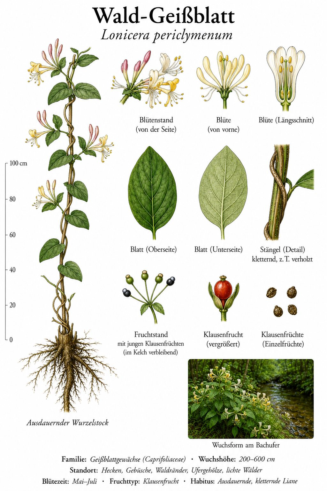
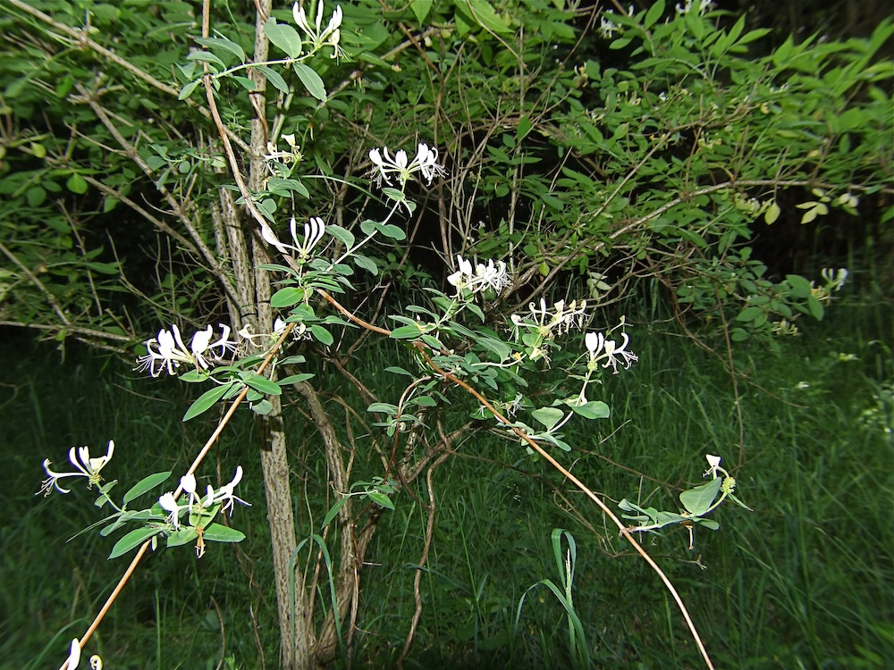

Der Duft-Trichter für Nachtfalter
Das Wald-Geißblatt ist eine kletternde Liane mit langen, trichterförmigen Blüten in cremeweiß bis rosa. Die langen Blütenröhren (4–5 cm!) sind nur von Insekten mit sehr langem Rüssel erreichbar — vor allem von Nachtfaltern aus der Familie der Schwärmer. Diese fliegen abends an und werden vom intensiven süßlichen Duft angelockt, der nachts besonders stark ist.
Vorsicht mit den roten Beeren
Im Spätsommer trägt das Geißblatt leuchtend rote, glänzende Beeren — schön anzusehen, aber für Menschen leicht giftig. Bei Kindern können bereits wenige Beeren zu Brechreiz und Magen-Darm-Beschwerden führen. Für Vögel sind sie aber harmlos und eine wichtige Herbst-Nahrungsquelle. Klassisches Beispiel: Eine Pflanze, deren Früchte für eine Tiergruppe Gift, für die andere Nahrung sind.